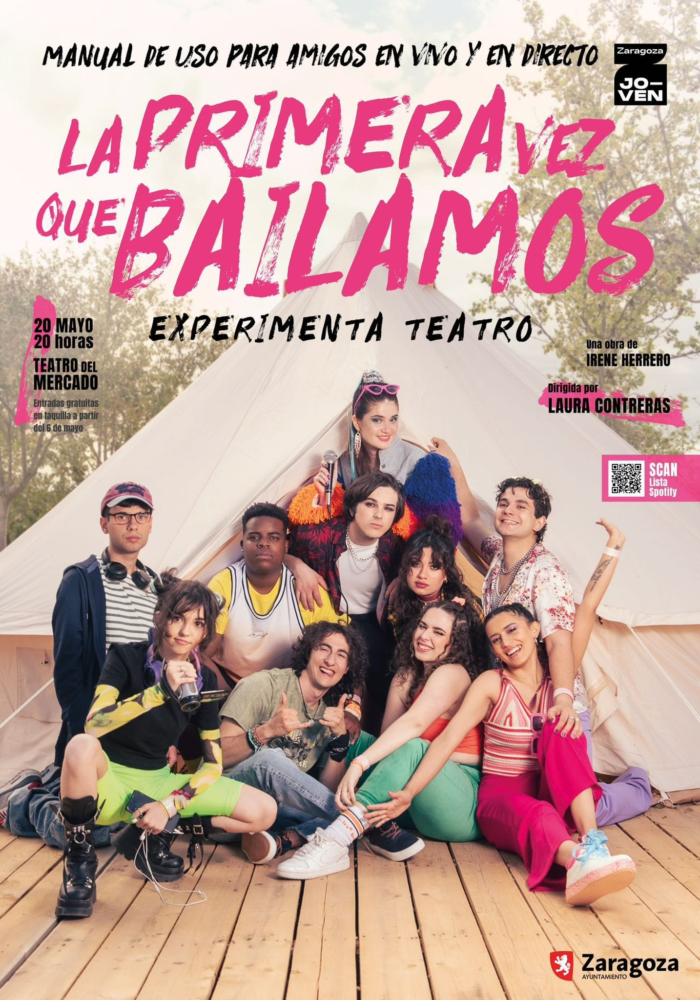
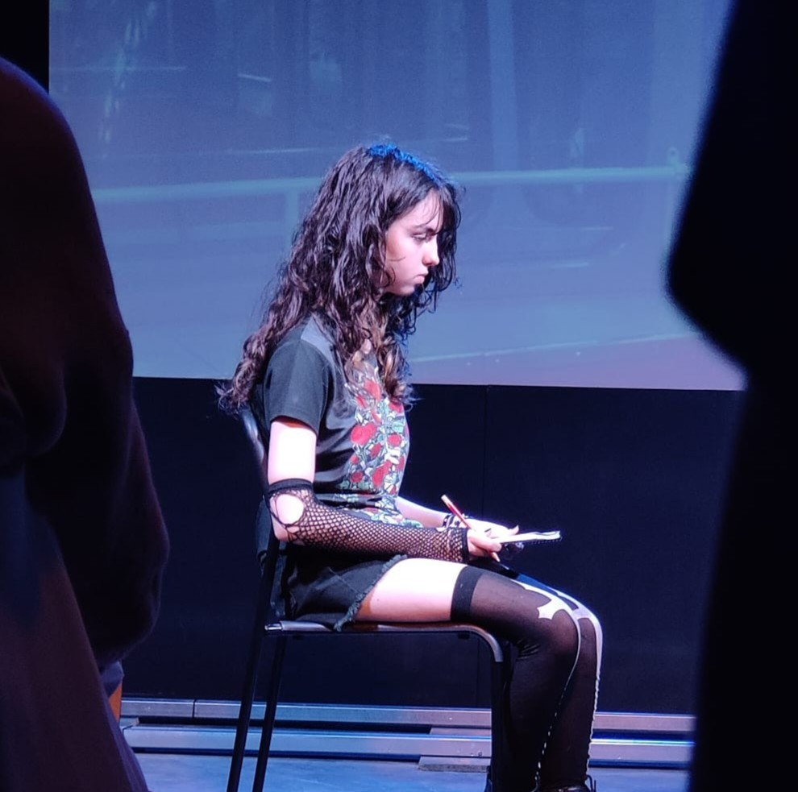
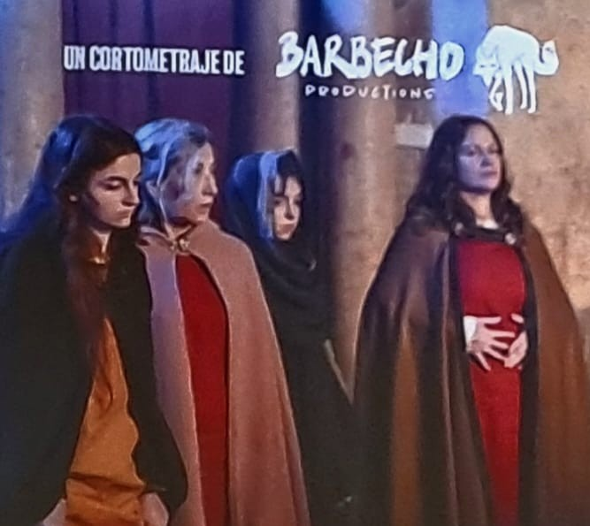

INTERPRETACIÓN · ARTES ESCÉNICAS
PATRICIA
MORATO.
HOLA, ME LLAMO PATRICIA
Un poco
de mí.
Tengo 22 años y soy de Zaragoza, España. Desde muy joven me he sentido atraída por el mundo de la interpretación y las artes en general, lo que me ha llevado a participar en diversos proyectos. Soy actriz con cierta experiencia y una gran pasión por la interpretación y las artes escénicas y audiovisuales.
Personaje en la obra «La primera vez que bailamos». Dirigido por Laura Contreras.
Personaje en «Huera» [Friki]. Dirigido por El Enjambre con María Aladrén.
Personaje en «En Trámite». Dirigido por Víctor Izquierdo.
Me interesa explorar personajes, emociones y distintas formas de expresión a través de cada historia. Estoy abierta a conocer nuevos proyectos y seguir creciendo delante de la cámara y sobre el escenario.
En escena.
En historias.
Proyectos en los que
he participado.

QUE BAILAMOSimages/la-primera-vez-que-bailamos.jpg


PROYECTOS EN LOS QUE HE PARTICIPADO.
En proceso.
En movimiento.
Participaciones artísticas y proyectos interpretativos.
PROYECTO
La primera vez que bailamos
PROYECTO
Friki
PROYECTO
En Trámite
¿TIENES UNA HISTORIA QUE CONTAR?
HAGAMOS
QUE OCURRA.
Para castings, proyectos audiovisuales, teatro y colaboraciones artísticas.
CONTACTAR ↗PATRICIA MORATO · ACTRIZ · ZARAGOZA